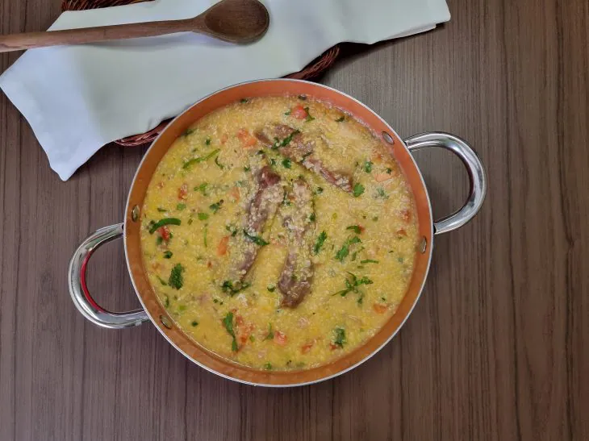
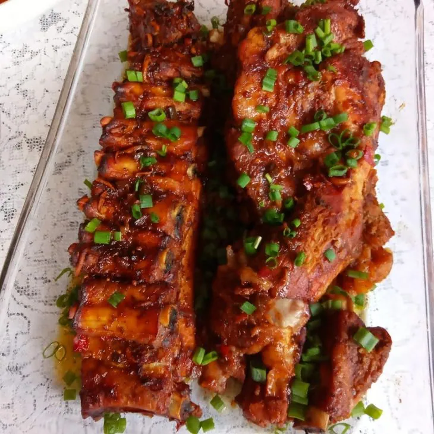
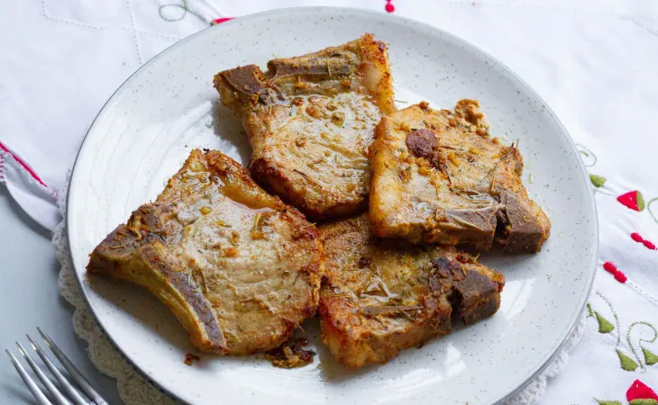
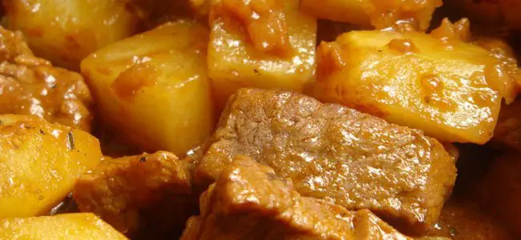
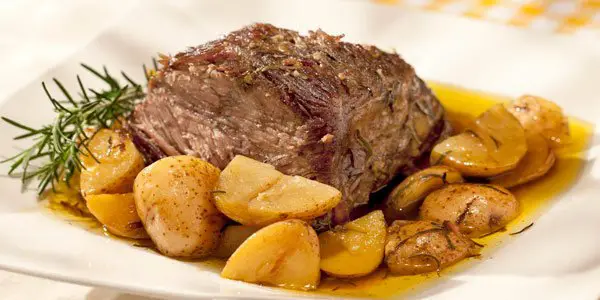
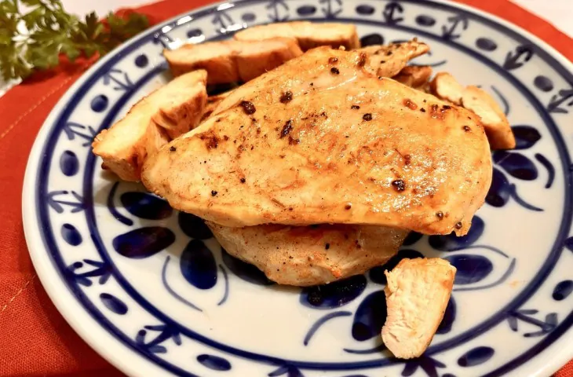

Carne de Porco
CANJIQUINHA COM COSTELINHA

250 gramas de quirera
1 kg de costelinha de porco
1 cebola grande picada
7 dentes de alho picados
1 tomate picado
1 colher de sopa de banha(ou óleo)
1 xícara de chá de bacon picada
Sal e pimenta-do-reino a gosto
Cheiro-verde a gosto
Reúna todos os ingredientes;
Coloque a costelinha em uma tigela e tempere com sal, pimenta e alho. Reserve;
Em água fervente, coloque a quirera para cozinhar na pressão por 10 a 15 minutos;
Em uma panela grande, doure a costelinha na banha de porco;
Depois que toda a carne dourar, adicione a cebola, o bacon e deixe fritar;
Despeje um pouco de água quente na panela, tampe e deixe cozinhar por 20 minutos ou até a carne ficar macia;
Retire a pressão da panela da quirera e despeje na panela com a costelinha. Misture bem, raspando o fundo;
Acrescente o tomate, o cheiro-verde picado e deixe apurar um pouco;
Prontinho... Uma delícia!
COSTELINHA SUÍNA ASSADA

2,5 kg de costelinha suína
2 limões espremidos
1 cebola picada
1/2 pimentão picado
5 dentes de alho picados
70 ml de molho shoyu
3 colheres de sopa de mostarda
3 colheres de sopa de ketchup
Sal a gosto
Pimenta-do-reino a gosto
Pimenta calabresa a gosto
Chimichurri a gosto
Coloque a costela em uma vasilha e esprema os limões por cima, passando o suco por toda a carne.
Adicione a cebola, pimentão, shoyu, mostarda, ketchup, sal, pimenta-do-reino, pimenta calabresa e chimichurri.
Espalhe tudo por toda a superfície da carne, distribuindo bem.
Disponha a costela em uma assadeira e cubra com papel alumínio
Asse em forno médio por cerca de 1 hora.
Retire o papel alumínio e retorne a carne ao forno.
Asse por mais alguns minutos, até ficar bem dourara por fora.
Prontinho... Uma delícia!
BISTECA DE PORCO FRITA

4 bistecas de porco com corte alto (ou corte fino)
Sal e pimenta-do-reino a gosto
1 fio de azeite
3 colheres de sopa de manteiga
2 dentes de alho amassados
Tomilho a gosto
Raspas de laranja-bahia a gosto
Reúna todos os ingredientes;
Em um recipiente, tempere as bistecas com o sal e a pimenta, passando bem por todos os lados da carne;
Em um frigideira de fundo grosso, esquente um fio generoso de azeite, adicione as bistecas e pressione-as com uma espátula, para que a carne entre em contato com a panela;
Assim que dourar, vire, dê uma leve pressionada novamente e deixe dourar o outro lado;
Em seguida, toste levemente a gordura das bistecas, usando um pegador de pinça;
Depois de bem grelhadas, adicione a manteiga, o alho, o tomilho e as raspas de limão às carnes;
Deixe no fogo médio e vá regando as bistecas com o caldo que irá formar, até ela ficar bem dourada e caramelizada. Retire do fogo e deixe descansar por 3 minutos;
Prontinho... Uma delícia!
Carne de Vaca
PICADINHO DE BATATA COM CARNE

500 g de coxão mole (cortados em cubo)
2 dentes de alho (bem picados)
1 cebola média (bem picada)
pitada de pimenta do reino
2 batatas médias (cortada em cubos ou pedaços médios)
200 g de molho de tomate
Cheiro verde, salsinha (quanto preferir)
1 caldo de carne
2 colheres de sopa de óleo
2 folhas de louro
1 colher de chá de oregano
1 cenoura pequena (cortada em rodelas)
500 ml de agua (temperatura ambiente)
Coloque o óleo e os cubos de carne deixe fritar (vai soltar bastante água).
Quando começar a secar, coloque a cebola, alho, orégano, pimenta-do-reino, caldo de carne, folhas de louro, deixe refogar (mas tenha cuidado para não deixar a carne queimar).
Depois acrescente 250 ml de água, deixe cozinhar um pouco (5 minutos).
Após isso coloque as batatas, cenoura, cheiro verde picado, cebolinha e o restante da água.
Deixe cozinhar por 30 minutos e por fim coloque o molho de tomate mexa bem e deixe mais 5 minutos.
Prontinho... Uma delícia!
BIFE A ROLÊ
 500 g de coxão mole em bife passado na máquina
1 linguiça calabresa
2 tomates grandes
1 pimentão grande
2 batatas médias
sal a gosto
300 g de bacon
1 cenoura
1 cebola grande
1 tablete de caldo Knorr (carne)
alho
Corte a cenoura, o bacon e a calabresa em tiras de modo que caiba no bife.
Coloque no bife, enrole e prenda com palitos de dente.
Numa panela de pressão, refogue o alho, a cebola, o pimentão e os tomates
Coloque os bifes prontos na panela, o sal e o caldo e mexa um pouco, complete com água.
Deixe cozinhar por 30 minutos.
Abra e coloque as batatas cortadas em cubos e deixe cozinhar por mais 10 minutos.
Prontinho... Uma delícia!
500 g de coxão mole em bife passado na máquina
1 linguiça calabresa
2 tomates grandes
1 pimentão grande
2 batatas médias
sal a gosto
300 g de bacon
1 cenoura
1 cebola grande
1 tablete de caldo Knorr (carne)
alho
Corte a cenoura, o bacon e a calabresa em tiras de modo que caiba no bife.
Coloque no bife, enrole e prenda com palitos de dente.
Numa panela de pressão, refogue o alho, a cebola, o pimentão e os tomates
Coloque os bifes prontos na panela, o sal e o caldo e mexa um pouco, complete com água.
Deixe cozinhar por 30 minutos.
Abra e coloque as batatas cortadas em cubos e deixe cozinhar por mais 10 minutos.
Prontinho... Uma delícia!
CUPIM ASSADO

1 peça de cupim de 2 kg
3 tabletes de caldo de carne
Cominho
1 kg de batatas
4 dentes de alho
1/2 copo de vinagre
Pimenta-do-reino
Orégano
1 cebola grande
Água
Se sua panela de pressão for pequena, corte a peça ao meio para caber.
Coloque os dentes de alho, os tabletes de caldo de carne, pimenta-do-reino, cominho e cubra com água.
Depois que levantou fervura cozinhe por 1 hora.
Retire a carne da panela e coloque em uma assadeira com a cebola em rodelas.
Leve ao forno médio.
No caldo do cozimento da carne, coloque as batatas cortadas ao meio para cozinhar por 5 minutos e depois junte à carne no forno.
Asse por mais 1 hora.
Prontinho... Uma delícia!
Carne de Frango
FILÉ DE FRANGO GRELHADO

1 peito de frango cortado em 4 bifes
1 colher (chá) de amaciante para carnes em pó
1 colher de mostarda
1 pitada de pimenta-do-reino
1 limão
1 pitada de sal
1 colher de manteiga
Coloque nos 2 lados dos bifes o suco de limão, mostarda, a pimenta-do-reino, o amaciante de carnes e sal.
Passe os bifes nesse molho e reserve tampado na geladeira por 20 minutos.
Após esse tempo, coloque a manteiga ou margarina em uma frigideira e cozinhe por 10 minutinhos até que dourem.
Se preferir, pode colocar no finalzinho 1 colher do molho que restou para aproveitar o fundinho da frigideira, fica uma delícia!
Prontinho... Uma delícia!
NUGGETS
500 g de peito de frango
pimenta-do-reino a gosto
1 cebola inteira
Limão a gosto
óleo (para fritar,caso queira)
sal a gosto
3 dentes de alho
farinha de rosca (para empanar)
1 ovo (para empanar)
Em um processador ou liquidificador você deverá acrescentar o peito de frango junto com o sal, pimenta-do-reino, cebola e os dentes de alho.
Processe os ingredientes ou bata no liquidificador.
Deixe os ingredientes bem homogêneos.
Faça o formato de nuggets de acordo com a sua vontade, de preferência no formato dos nuggets industrializados, para obter maior semelhança.
Para empanar você irá precisar separar em 3 recipientes a farinha de rosca, o ovo e a farinha de trigo.
Para o frango processado não grudar em suas mão passe um pouco de margarina nas mesmas.
Passe o nuggets na farinha de trigo, depois no ovo e depois na farinha de rosca (repita esse procedimento duas vezes).
O nuggets estará pronto para ser frito ou assado de acordo com sua preferência.
Prontinho... Uma delícia!
FILÉ DE FRANGO A PARMEGIANA
1/2 kg de filé de frango
suco de limão, ervas finas e sal a gosto
1 dente de alho picadinho
óleo para fritar
2 ovos batidos com 1 pitada de sal
2 xícaras (chá) de farinha de rosca
1 cebola picadinha
1 caixinha de molho de tomate pronto
3 colheres (sopa) de azeite
manjericão ou orégano a gosto
2 tomates maduros picadinhos
1/2 xicara (chá) de água
1 tabletinho de caldo de galinha
250 g de mussarela em fatias
Tempere os filés de frango com o alho, suco de limão, ervas finas e sal a gosto.
Deixe na geladeira por 30 minutos.
Após esse tempo, passe nos ovos batidos e na farinha de rosca.
Frite em óleo não muito quente.
Retire e deixe descansar sobre papel absorvente.
molho: Doure a cebola no azeite, acrescente os tomates picadinhos, o molho pronto, a água e o caldo de galinha.
Deixe apurar um pouco, desligue e acrescente o manjericão ou o orégano.
Coloque os filés em um refratário.
Cubra com a mussarela em fatias.
Regue com o molho e leve ao forno bem quente, somente para derreter a mussarela.
Prontinho... Uma delícia!